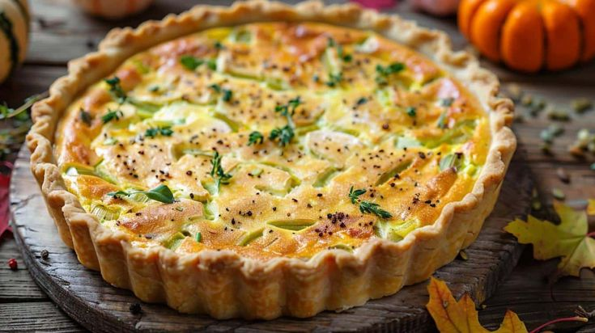

Quiche de Abóbora
Uma quiche cremosa, saborosa e fácil de preparar, perfeita para lanches ou refeições leves.

Ingredientes
Rende 6 a 8 porções
- 1 massa de torta pronta ou caseira
- 400g de abóbora cozida e amassada
- 3 ovos
- 1/2 xícara de creme de leite
- 1/2 xícara de queijo parmesão ralado
- 1 cebola pequena picada
- 2 colheres de sopa de azeite
- Sal, pimenta-do-reino e noz-moscada a gosto
Modo de Preparo
Tempo estimado: 50 minutos
- Preaqueça o forno a 180 °C e prepare a massa em uma forma de quiche, furando o fundo com um garfo.
- Refogue a cebola no azeite até dourar e misture com a abóbora amassada.
- Em uma tigela, bata os ovos com o creme de leite, o queijo, sal, pimenta e noz-moscada.
- Adicione a mistura de abóbora aos ovos batidos e mexa bem.
- Despeje o recheio sobre a massa e leve ao forno por 35 a 40 minutos ou até dourar levemente e firmar.
- Deixe esfriar por alguns minutos antes de cortar e servir.
Dica do Chef: Para dar um toque especial, acrescente queijo gorgonzola ou ervas frescas como salsinha ou tomilho.